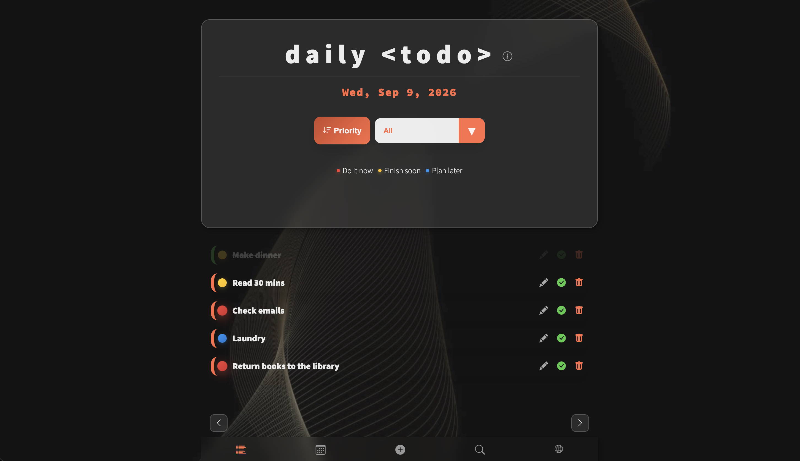
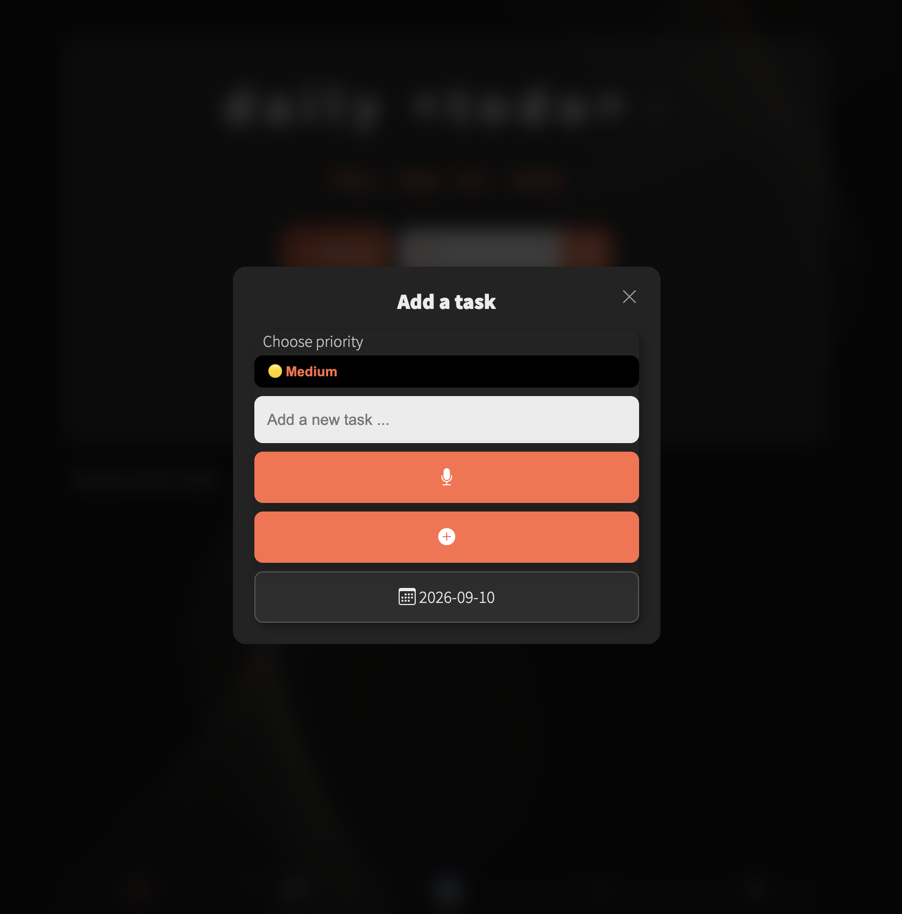
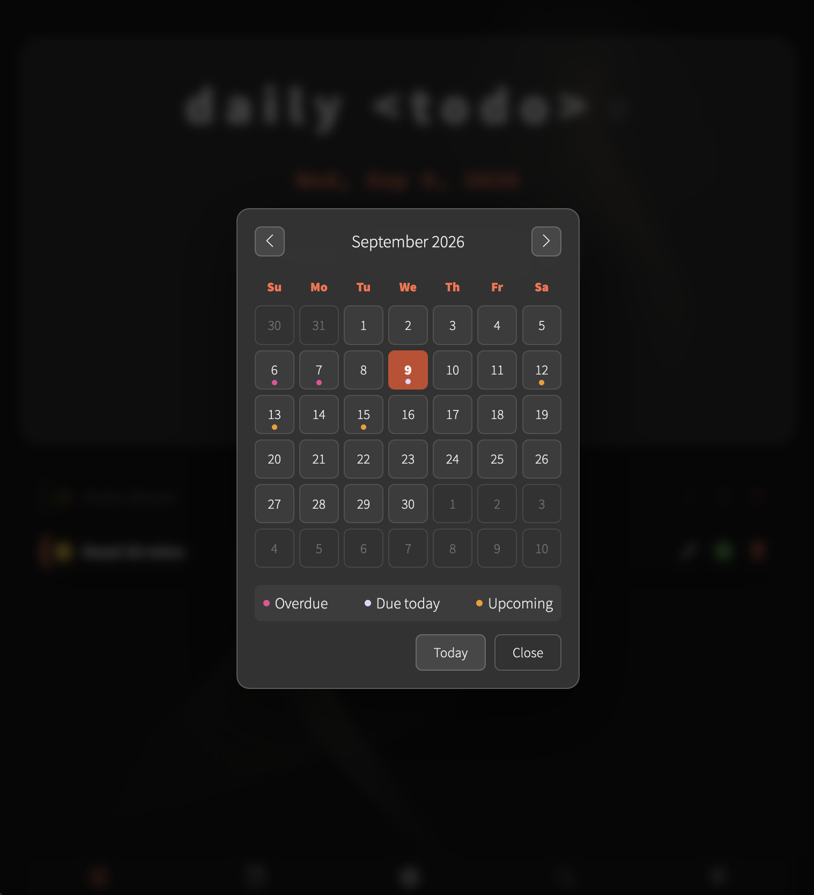

A modern, responsive todo list application built with vanilla JavaScript, featuring priority management, calendar-based planning, keyword search, and smart filtering.

Features
🌐 Multilingual Interface
- Supports 11 languages: English, Thai, German, Spanish, Finnish, Japanese, Korean, Italian, Russian, Swedish, and Ukrainian
- Full interface localization, including date picker and buttons
- Language switcher integrated into the main menu
- Enhances accessibility for global users
📅 Daily Task Organization
- Date-based task management with intuitive date picker
- Navigate between days using previous/next buttons, or swipe left/right on touchscreen devices
- Calendar view with flip animation on date change for daily planning
- Color-coded calendar dots highlight incomplete tasks by status: overdue, due today, or upcoming
- Tasks are automatically sorted by priority for each date
✨ Priority System
- Three priority levels: High (do it now), Medium (finish soon), Low (plan for later)
- Visual priority indicators with color-coded badges
- Pulsing animation for high-priority tasks
- Edit a task's priority to reprioritize — doubles as manual reordering, since the list sorts by priority
🔎 Task Search
- Search tasks by keyword across all dates, not just the current day
- Results show each matching task's date, so you can jump straight to it
- Accessible from the search icon in the bottom navigation
🔍 Smart Filtering
- Filter by completion status (All, Completed, Active)
- Filter by priority level (High, Medium, Low)
- Quickly focus on what matters most


📊 Priority Sorting
- Sort active tasks by priority with one click
- Automatically displays uncompleted tasks sorted from high to low priority
✅ Confirmation Dialogs
- Confirm dialog before completing a task, with an option to mark it done and repeat it tomorrow
- Confirm dialog before deleting a task, to prevent accidental removal
- Reduces the risk of losing a task by mistake
💾 Data Persistence
- Tasks are saved to localStorage with their task dates
- Data persists across browser sessions
- Ensures privacy—no account or cloud sync required
📱 Responsive Design
- Mobile-friendly layout with optimized controls
- Glass morphism UI with gradient accents
- Add to home screen for a native‑app feel
- Works seamlessly offline
Technologies Used
- HTML5 - Structure
- CSS3 - Styling with custom properties, flexbox, and media queries
- Vanilla JavaScript - Core logic, data handling, and DOM updates
- Bootstrap Icons - Modern icon set
- localStorage API - Data persistence and offline storage
Usage
- Switch Language: Choose a preferred language from the menu to instantly update the interface
- Select a Date: Use the date picker, previous/next buttons, or swipe left/right to navigate between dates
- Add a Task: Enter your task, select a priority level, and click the + button
- Search Tasks: Tap the search icon in the bottom nav, type a keyword, and jump straight to a matching task's date
- Complete a Task: Click the check button, then confirm — optionally repeat the task tomorrow
- Delete a Task: Click the trash icon and confirm to remove a task permanently
- Edit a Task: Update a task's text or priority to reprioritize or reorder it
- Filter Tasks: Use the dropdown to filter by status or priority
- Sort Tasks: Click the "Priority" button to view active tasks sorted by priority
- Plan & Review: Navigate dates via the calendar to plan ahead or review past tasks
Explore daily-todo
Organize your daily tasks with priority management and smart filtering.
Open daily-todo